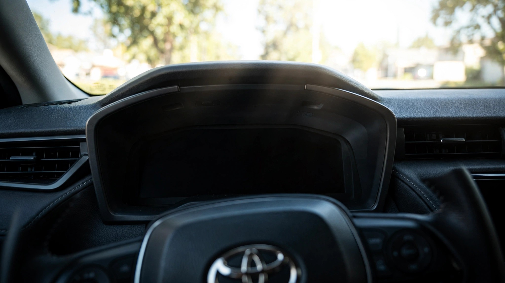

Toyota Blinded a Million Drivers. Twice.

Toyota recalled 591,377 vehicles across fifteen model lines in late 2025 because their instrument clusters could go blank at startup. Combination meter is the engineering term for that digital panel that replaced your grandmother's speedometer needle. It would occasionally fail its boot sequence and show the driver nothing: no speed, no warning lights, no turn signal indicators. Toyota issued the recall, pushed a software update, and moved on.
Ten months later, on August 6, 2026, Toyota recalled another 508,354 vehicles for the same category of defect. Different models this time, all 2025-2026 Camry Hybrids with the 7-inch combination meter, but the failure mode is functionally identical: an error in the startup sequence blanks the display and deactivates the hazard lights, turn signals, seat belt warning system, and smart key reminder.[1] Combined total: 1,099,731 Toyotas and Lexuses recalled because their dashboards forgot how to turn on.
That is more vehicles than Ford recalled for its F-150 and Super Duty dashboard blackouts (355,656), more than Hyundai's Tucson display recall (96,300) and Kia's multi-model cluster failure (42,677) put together.[2] Toyota now leads every manufacturer in the world in dashboard blackout recalls. A brand built on reliability has broken the same component twice.
Recall one spanned 2023-2025 model years across the RAV4, RAV4 Prime, Highlander, Grand Highlander, 4Runner, Tacoma, Camry, Crown, Crown Signia, GR Corolla, Venza, and Lexus TX, RX, and LS.[3] Toyota's entire lineup, essentially, from the $28,000 Corolla Cross's mechanical cousin to the $80,000 Lexus LS. Plug-in hybrid models required dealer inspection to determine whether the fix was a software flash or a full panel assembly replacement, which tells you something about how well Toyota understood its own bug.
Recall two is narrower but numerically larger: 508,354 units produced between August 15, 2024, and June 9, 2026. Toyota built Camry Hybrids with this software bug for nearly two years before issuing a recall. Owner notification letters are expected by September 21, 2026, meaning some owners will have driven with a potentially blank dashboard for over two years before learning it was a known defect.[1]
Cross-reference this with FARS data and the arithmetic gets uncomfortable. Over the 2014-2023 period, the Camry accumulated 6,328 fatalities at a rate of 2.03 per 100 million vehicle miles traveled. RAV4: 914 deaths. Highlander: 1,106. Tacoma: 2,274. 4Runner: 1,418.[4] No, NHTSA has not attributed any crashes or injuries to blank dashboards specifically, and yes, FARS deaths are overwhelmingly caused by speed, impairment, and not wearing seatbelts rather than equipment failure. But those FARS numbers represent what happens when situational awareness drops behind the wheel, and a driver staring at a dead instrument cluster has objectively less of it.
Why does this keep happening? Toyota has not answered publicly, but both recalls involve different platforms and different software versions. Recall one affected a broad swath of Toyota's TNGA architecture across multiple gauge cluster sizes. Recall two affects only the 7-inch meter in the Camry Hybrid, which Toyota specifically noted uses different software than similar meters in other models. So this is not one bug propagating across platforms. These are two independent software failures in the same critical component, which is arguably worse. One failure is a mistake. Two failures in the same component class suggests a systemic weakness in how Toyota validates instrument cluster software.
Mechanical gauges could not do this. A needle driven by a stepper motor connected to a vehicle speed sensor did not have a boot sequence, did not run an operating system, and could not fail to initialize because a software startup error prevented the display controller from handshaking with the body ECU. What replaced that robust analog system is a fragile digital one whose only advantage to the driver is nicer-looking numbers and adaptive cruise control readouts. Every instrument panel is now a computer that can crash.
What to do: If you drive any 2023-2026 Toyota or Lexus, check your VIN at nhtsa.gov/recalls immediately. Recall one covers a sprawling list of models; recall two is all Camry Hybrids with the 7-inch display. Call Toyota at 1-800-331-4331 if you have questions. If your dashboard goes blank at startup, do not drive. Turn it off, wait thirty seconds, restart, and if it blanks again, call a tow truck, because you have just become a driver with no speedometer, no warning lights, and no turn signal indicators on a road full of people who assume you can see all three.
Limitations
NHTSA reports zero crashes, injuries, or fatalities attributed to either combination meter recall. Both recalls may involve entirely different root causes despite producing the same failure symptom; Toyota has not disclosed detailed failure analyses. FARS fatality data covers 2014-2023 and predates most affected vehicles, so the cross-reference illustrates risk profiles of these models, not the dashboard defect's direct consequences. Some model overlap exists between recalls: the 591,377 figure from recall one includes some 2025 Camrys, though Toyota states recall two specifically covers units with the 7-inch meter not addressed by recall one.
Strongest Counterargument
Zero injuries. Toyota has built roughly 1.5 million of these vehicles, found two separate software bugs, recalled them both before anyone was hurt, and is providing free fixes at dealers. Dashboard failures at startup do not mean frequent failures; Toyota estimates the condition occurs "randomly," which in engineering terms means a low enough failure rate that most owners will never experience it. Compared to Hyundai's Palisade power seat recall, which was triggered by a child's death, Toyota's dashboard recalls are precautionary, not reactive. That is the system working as designed, and criticizing Toyota for finding and fixing problems proactively is an odd way to incentivize transparency.
Sources & References
- Reuters, "Toyota to recall over 508,000 US vehicles over instrument cluster display issues," August 11, 2026. reuters.com
- Reuters, "Hyundai to recall over 96,000 US vehicles over faulty instrument panel display," June 26, 2026; Industrial Equipment News, "Ford Recalls More than 355,000 Pickup Trucks Over Instrument Display Failure." nhtsa.gov
- HotCars, "Toyota Recalls 591K Vehicles For Instrument Cluster Malfunction," covering NHTSA recall affecting 15+ Toyota/Lexus model lines. hotcars.com
- NHTSA, Fatality Analysis Reporting System (FARS), 2014-2023. Toyota Camry: 6,328 deaths; RAV4: 914; Highlander: 1,106; Tacoma: 2,274; 4-Runner: 1,418. nhtsa.gov
Data sourced from NHTSA recall filings and FARS 2014-2023. The Crash Report is not affiliated with any automaker. Check nhtsa.gov/recalls for the latest recall status on your vehicle.